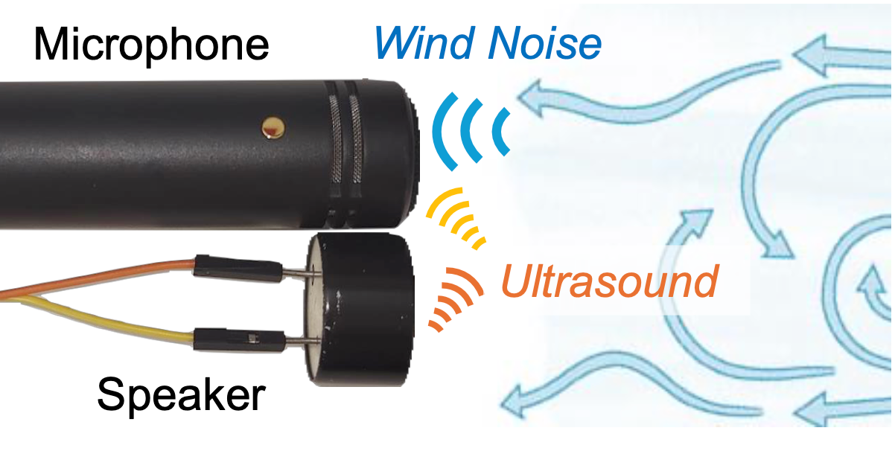

Project DeWinder: Single-Channel Wind Noise Reduction using Ultrasound Sensing
|
 |
|
|
| The quality of audio recordings in outdoor environments is often degraded by the presence of wind. Mitigating the impact of wind noise on the perceptual quality of single-channel speech remains a significant challenge due to its non-stationary characteristics. Prior work in noise suppression treats wind noise as a general background noise without explicit modeling of its characteristics. In this paper, we leverage ultrasound as an auxiliary modality to explicitly sense the airflow and characterize the wind noise. We propose a multi-modal deep-learning framework to fuse the ultrasonic Doppler features and speech signals for wind noise reduction. Our results show that DeWinder can significantly improve the noise reduction capabilities of state-of-the-art speech enhancement models. |
Citation
- DeWinder: Single-Channel Wind Noise Reduction using Ultrasound Sensing, Kuang Yuan, Shuo Han, Swarun Kumar and Bhiksha Raj, InterSpeech 2024 [PAPER]